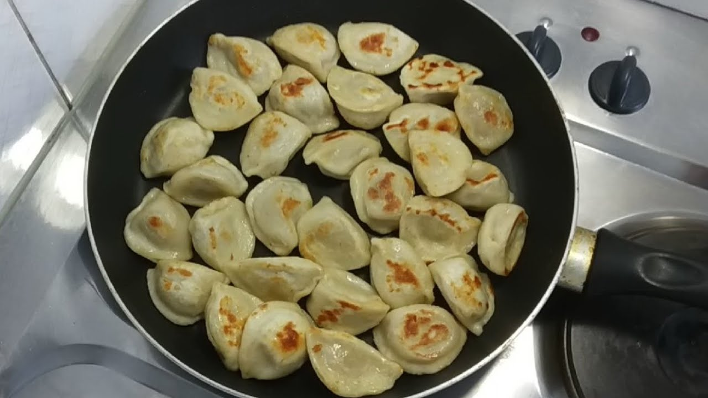

How to make fried pelmeni by default
If you get bored by simple boiled pelmeni you should defenetly try these ones! Fried pelmeni!

Description
- Ingridients
- Recipe
- Tips and Tricks
Ingridients
- pelmeni (1 kg)
- oil
- spices
Recipe
All you need is to be ready for some action now!
- Prepare your frying pan. Just it would be at hot temp.
- After that add some oil so it could go all over the pan.

- When the time comes - throw there all of your pelmenis. Do not close the pan as they will look more like boiled one. And we don't want that, do we?
- As long as pelmeni don't have fried skin we can prepare our souce
- For that we need two ingridients:
- Just mix them all and we have our adorable souce.
- Now your pelmeni must be ready already, just put them in the plate, add souce and voala!.. It's prepared

Thanks for wacthing! Hit like and subscribe button!